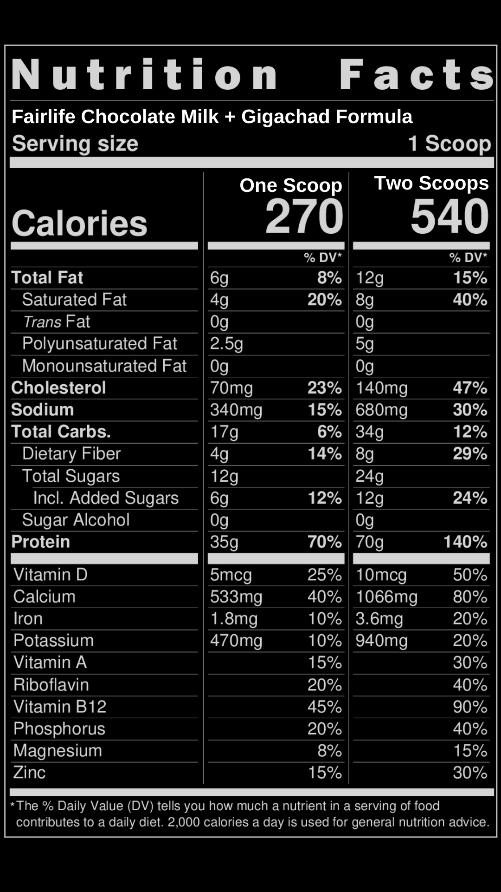

Work smart AND hard - Zone 2 Training

CARDIO Cardio is the most misunderstood and least optimized time sink for physically active people. It is absolutely true that a practice as minimal as an outdoor walk has extraordinary health benefits if maintained as a lifestyle habit, but for the amount of time one spends on cardio with some vague health outcomes in mind, there should be clarity as to what mechanism is being exploited to prolong or advance health. What *exactly* is the goal with cardio? Is it burning calories? Because I burned 450+ calories in less than an hour of weightlifting. If the goal is as simple as burning more energy than you eat, why not simply lift weights? Empirically we can see a difference in the physiology of endurance athletes who as part of their training do an enormous amount of “cardio” and regular weightlifters. We can see with people in our lives who swear by cardio as being critical to their mood, energy, and overall state of being. Both cardio and weightlifting raise average heart rate across the practice, burn calories, and stress muscle fibers, so what is it that makes cardio different? To understand this, you need to understand the energy system(s) of the body. At a high heart-rate, you presumably are working at a level that you’re also panting and inhaling quite hard. During exercise of this intensity, the absence of oxygen steers your body towards anaerobic respiration; in the absence of oxygen, the most effective fuel source to use are sugars. When cells metabolize sugars, they produce lactic acid as a byproduct which quickly brings you to fatigue (the “burn”). You can actually test this yourself by leaving sugar on your tongue, or a bit of non-diet soda and feel your gustatory cells break down the sugars, raising the acidity of your mouth. At a lower heart rate, mitochondria uses fats as the fuel source—assuming this is in the presence of oxygen, these cells can also metabolize lactic acid and reuse it as a supplementary fuel source. Think of these cell bodies as a muscle, which with time can be trained. How do you train this? To train this you need to exclusively stay in this territory of exertion. This is known as Zone-2. Zone-2 training has a misnomered definition that is used more commonly than what it technically means. Zone 2 is specific ratio between your rate of oxygen consumption (VO2 max) and the rate of carbon dioxide you expel from your body. VO2 max is a rate—an abstraction above the oxygen you breath in; what is the rate of the process which begins with oxygen intake, ends in tissue oxygenation, powering mitochondrial cellular metabolism? Think of it as liters of oxygen per minute. A more efficient person needs less oxygen per minute for a progressively more strenuous exercise, while simultaneously someone who draws in more oxygen has what can be thought of as a larger capacity for oxygenation. Of course, this can be confounded with total body mass so a more to-life measure of health is ml of O2/minute/kg. Or even better, liters/minute/lean muscle mass with respect to time because muscle mass is the least metabolically active tissue. The purpose of knowing your VO2 is like taking— different variables have ranges of “health”, and while within a given range it’s possible the but measures drastically out of range indicates something is wrong in the chain of heart-circulation-muscle fiber. And, with time, these numbers will improve as your diapgrahmtic tissue hypertrophies and your mitochondria’s ability to oxidize lactate improves. There is an interesting exception where some (elite) athletes pump blood so quickly that they blood doesn’t have enough time in the lungs to be oxygenated. This is known as exercise induced arterial hypoxemia. This is infeasible to measure for most athletes because it requires stationary exercise with equipment priced at thousands of dollars. Heart rate is a good proxy, which is far easier to measure. Zone 1: “55-65% of HR max”. Nearly the same level of exertion as being stationary. Zone 2: “65-75% of HR max”. If you’re speaking on the phone, someone can tell by your voice that you’re either moving or in some light exercise. Re Zone 3: 80-85% Speaking between pants, this syarts to become intense. Zone 4 is above 85% and Zone 5 is above 90%. This is very intense, and Zone 5 comes from squeezing out more energy. The difference is like the first leg of a minute long sprint versus your body pushing itself to keep pace as you fatigue. A lot of people will say Zone-2 is 65-75% of your maximum heart rate, but for most people to reach the VO2 Max of Zone-2 their heart rate is probably 75-80%. You have to do zone 5 to train your glycolytic capacity, the maximum rate of glucose to lactate conversion. When you are training at Zone 2, you are at the maximum level of exertion that solely relies on mitochondrial oxidative phosphorylation and lactate is not produced. These are two separate energy systems, and the former (mitochondrial function) when isolated can be trained for efficiency. Elite endurance athletes have lower resting pulses because their mitochondrial efficiency is higher-- analogous to having stronger pound-for-pound strength—such that their tissue doesn’t need to be continuously reoxygenated. Zone-2 will oxidize the most fat. When your body uses glucose as a fuel source, lactate is the byproduct. Lactate accumulation is the feeling of the “burn”, and can be reoxidized in the mitochondria back into ATP. At the opposite end of the bell curve are people with metabolic syndrome who have such poor mitochondrial function that they cannot reach the threshold of exercise which requires the oxidation of lactate because they simply cannot oxidize lactate, thus they rely on glucose as a fuel source. Consider, why isn’t the ratio between VO2 and CO2 is not static? As exercise increases more oxygen is necessary (VO2), but shouldn’t you give off more CO2? The answer is that more type-II muscle fibers are recruited and more glucose is burned for energy, producing more CO2. The goal is for you to recruit primarily type-1 (slow twitch) muscle fibers as exercise intensity increases while using fat as a fuel source, which is a marketed difference to an untrained person who will burn glucose instead. Resting lactate should be kept low. It is a measure for your capacity of fat oxidation. The ratio of resting lactate as measured in mmol between a patient with metabolic syndrome, an average adult, and an elite athlete is about 2:1:0.5 Lactatemia (level of lactate in blood) is a 1:1 of your mitochondrial oxidation. With output, more glycolysis is needed to produce energy which in turn produces lactate. The process is glucose -> pyruvate -> lactate. When lactose can no longer be reoxidized by the mitochondria for fuel, that’s when it ends up in the blood. How do you structure this?

THE GIGACHAD SCIENCE MANIAC BALLER PROTEIN SHAKE
1. Scoop out Step One: Get Jacked Grass-Fed Whey Protein
2. For each scoop, pour in 1 Cup of Fairlife Chocolate milk.
B-bbut chocolate milk has sugar! Check out the macros… (macros) B-but I’m lactose inteolrance!! It’s lactose free. You know what to do. Aside: Some people are super-concerned about excess protein being toxic, especially towards the kidneys because of excess nitrogen. Studies have been done on this and to reach a clinically significant threshold for kidney taxation you’d need at least 3 grams per kilogram. It’s hard enough to reach 2.
SHOP GIGACHAD SCIENCE APPROVED PROTEIN FAIRLIFE LACTOSE FREE CHOCOLATE MILK